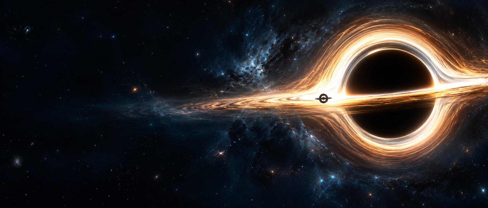

Фізика «Інтерстеллара»
Що у фільмі пораховано, що спрощено, а що вигадано
«Інтерстеллар» Крістофера Нолана (2014) став чи не єдиним голлівудським блокбастером, над яким всерйоз працював справжній фізик-теоретик. Кіп Торн особисто обчислював параметри чорної діри, червоточини та гравітаційного сповільнення часу, а його розгортання на екрані переросло у фахові наукові публікації. Пройдемося ключовими головоломками кінострічки й з'ясуємо, де ховається залізна логіка, де просте вимушене спрощення, а де чиста фантазія. Кожен ефект марковано: наукаспрощеннявигадка.
01Справжня наука під прицілом камери
Кіп Торн — визнаний фізик із Каліфорнійського технологічного інституту та ключовий ідеолог детектора гравітаційних хвиль LIGO. За цей прорив 2017 року він здобув Нобелівську премію спільно з Райнером Вайссом та Баррі Барішем. Сам задум стрічки народився з його давніх обговорень із продюсеркою Ліндою Обст, а на знімальному майданчику Торн виступав одночасно науковим консультантом і виконавчим продюсером.
Він поставив перед творцями ультиматум із двох пунктів. По-перше, жоден кадр не повинен суперечити перевіреним законам фізики. По-друге, найсміливіші припущення зобов'язані базуватися на реальних гіпотезах, а не на довільній фантазії сценаристів. Усі викладки й розрахунки вчений згодом зібрав у книзі «The Science of Interstellar», яка і лягла в основу цього розбору.
Насправді. Статус наукового консультанта не робить усе показане єдиною правдою. Торн самостійно розмежовує кінематографічні ефекти на доведену науку, правдоподібні припущення та чисті спекуляції. Наприклад, появу тесеракта він без вагань зараховує до найсміливіших вигадок.
02наукаЯк насправді виглядає Гаргантюа
Сама чорна діра не випромінює світло, проте навколо неї вирує величний диск розпеченого газу, а колосальне тяжіння викривлює світлові промені. Завдяки цьому ми бачимо не лише лицьовий бік диска, а й ту його частину, що ховається позаду діри: світло обгинає небесне тіло і приходить до нас. Через такий ефект сяючий диск немов огортає темну тінь зверху та знизу.
Для втілення цього ефекту студія візуальних ефектів Double Negative розробила спеціальний алгоритм DNGR. Програма скрупульозно відстежувала траєкторію кожного світлового променя за законами загальної теорії відносності. На інтерактивній схемі нижче цей процес показано в мініатюрі: браузерний рушій прораховує викривлення променя від камери поблизу чорної діри та визначає його кінцевий шлях і колір.
Спрощення сцени: діра тут не обертається, а візерунок газу в диску умовний. Гаргантюа у фільмі обертається майже з граничною швидкістю, від цього тінь трохи сплющується з одного боку. Форма тіні й «обіймів» диска рахується точно. Корабель на передньому плані — звичайна 3D-модель поверх розрахованої картинки, тяжіння діри його світло не згинає.
Цікавий факт. Чорна діра зовсім не схожа на воронку чи звичайну темну кулю. Її центральна тінь приблизно вдвічі з половиною перевищує розмір горизонту подій — саме таку площу займають світлові промені, звідки немає вороття.
03наукаОдна година, що дорівнює семи рокам
На таємничій планеті Міллер кожна прожита година еквівалентна семи земним рокам. Причина криється у гравітаційному сповільненні часу: чим глибше об'єкт занурений у гравітаційну яму, тим повільніше для нього плине час. Цей феномен абсолютно реальний — скажімо, навігаційні супутники GPS щодня коригують свої годинники на частки мікросекунд через слабшу гравітацію на орбіті.
Проте уповільнення у 61 тисячу разів — показник екстремальний. Поблизу нерухомої чорної діри планета не змогла б утриматися ближче ніж на відстані трьох радіусів горизонту, і час там сповільнився б лише в 1,4 раза. Торн знайшов витончений вихід: якщо чорна діра обертається на граничній швидкості, найближча безпечна орбіта зсувається впритул до горизонту. Покрутіть повзунок обертання, щоб побачити трансформацію часу.
Схема згори в радіусах GM/c²: чорне коло — горизонт, пунктир — найближча стійка орбіта діри без обертання (6 радіусів), світле коло — найближча стійка орбіта при вибраному обертанні, крапка — планета. Що ближче орбіта до горизонту, то червоніше світиться планета: глибше в гравітаційній ямі. Формули — Бардін, Прес і Тьюколскі (1972).
Для маси Гаргантюа, що становить близько 100 мільйонів мас Сонця, вчений підібрав швидкість обертання, яка поступається граничній лише на мінімальне значення 1,3·10⁻¹⁴. Математичний розрахунок із такими параметрами дає якраз той самий коефіцієнт — близько 62 тисяч, що забезпечує сюжетну умову про «годину за сім років».
Тут ховається чесне застереження. Ще 1974 року той самий Кіп Торн показав, що газ, падаючи на чорну діру, розкручує її лише до a ≈ 0,998: випромінювання диска гальмує подальше розкручування. Тож Гаргантюа з обертанням 1 − 1,3·10⁻¹⁴ — свідоме припущення заради сюжету: фізика його не забороняє, але природа таких дір, найімовірніше, не створює. За a = 0,998 розрахунок дає множник лише близько 11 — година на планеті обернулася б одинадцятьма годинами на Землі.
Насправді. Для членів екіпажу на самій планеті час плине абсолютно звично — ніхто не відчуває дивних ривків. Помітною різниця стає лише після повернення на корабель і порівняння циферблатів.
04наукаБлизнюки, які опинилися в різних епохах
Купер вирушає в космос, коли його маленькій доньці Мерф виповнилося лише десять років. На фінальних кадрах фільму вона зустрічає його сивою літньою жінкою, тоді як сам мандрівник майже не змінився. Це класичне втілення відомого парадоксу близнюків: годинники розходяться, бо долають різні траєкторії у просторі-часі. Насправді жодного парадоксу тут немає — кожен просто пройшов власним шляхом різної довжини.
Важливо. Колосальну різницю у віці спричиняє зовсім не швидкість польоту корабля. Головним каталізатором у сюжеті «Інтерстеллара» виступає потужна гравітація велетня Гаргантюа.
05спрощенняГігантські хвилі на водній планеті
Головна небезпека поблизу чорної діри полягає не в загальному притяганні, а в припливних силах — різниці тяжіння між ближньою і дальньою точками об'єкта. Вони нещадно розтягують будь-яке тіло вздовж радіуса. Дивовижний факт: чим масивніша чорна діра, тим м'якшими стають припливні сили біля її горизонту. Саме тому Торн наділив Гаргантюа колосальною масою, інакше планета Міллер була б моментально розірвана на частини.
Оцінка за Ньютоном: різниця прискорень голови й ніг 2GM·L/r³ на горизонті невращаючої діри. Для зоряної діри (10 мас Сонця) це десятки мільйонів g, для Гаргантюа — менше мільйонної частки g.
Оскільки планета у тисячі разів більша за людину, припливний вплив на неї залишається потужним. За задумом Торна, це деформує світ, а велетенські хвилі виникають через легке розгойдування планети навколо чорної діри. Така гіпотеза виглядає переконливо, але в самому фільмі цих розрахунків не наводять, через що ми залишаємо позначку спрощення.
Цікавий факт. Перетин горизонту не завжди супроводжується загибеллю. Біля надмасивної чорної діри мандрівник може пройти межу непомітно, а головні загрози зустрінуть його вже всередині.
06спрощенняЗа кадром фільму: ефект блакитного зсуву
Якщо час на планеті сповільнений у 61 тисячу разів, то й світлові потоки, що падають із глибин космосу, надходять у 61 тисячу разів стрімкіше. Кожна електромагнітна хвиля катастрофічно стискається, а частота випромінювання стрімко зростає. Реліктове випромінювання з початковою температурою 2,7 кельвіна перетворилося б на планеті Міллер на жорстке рентгенівське випромінювання з температурами понад 160 тисяч градусів. Додавши сюди світло зір і навколишнього диска, ми отримали б повністю випалену поверхню.
Кіп Торн відкрито згадує цю проблему у своїй книзі. Виходом стало припущення, що Гаргантюа є відносно спокійною чорною дірою з тьмяним диском, а решту технічних деталей сценаристи просто залишили за кадром. Через це ставиться позначка спрощення: суворі закони фізики тут не порушені грубо, проте вкрай руйнівні наслідки навмисно проігноровані.
Висновок. Час і світло нерозривно пов'язані між собою: гравітаційне сповільнення та блакитний зсув є двома сторонами єдиного фундаментального процесу.
07спрощенняТаємнича червоточина біля Сатурна
У кінематографічному світі червоточина виглядає не як плоска вирва, а як тривимірна куля, крізь яку проглядає зовсім інше зоряне небо. Це фізично обґрунтовано: тунель з'єднує віддалені регіони Всесвіту, і світло з протилежного кінця пробивається крізь горловину з усіх боків. Поблизу країв кулі світлові промені з нашого боку викривлюються настільки сильно, що зірки перетворюються на витончені світлові дуги. Команда Торна ретельно прорахувала цей візуальний ефект і 2015 року опублікувала окремою науковою статтею.
Схема: за «горлом» — інше небо з пурпуровою туманністю, біля краю — наше небо, вигнуте лінзуванням, ліворуч — Сатурн. Лінзування тут наближене, а не точне, як у статті 2015 року.
Чи можуть такі червоточини існувати — відкрите питання. Загальна теорія відносності їх дозволяє, але щоб горло не схлопнулося, потрібна речовина з від'ємною енергією, а як її отримати у великій кількості, невідомо. Тому вигляд червоточини — наука, а її існування — припущення.
Не плутати. Червоточина жодним чином не є чорною дірою. Крізь безпечний прохід тунелю можна мандрувати в обидва боки, тоді як у чорну діру веде дорога виключно в один кінець.
08вигадкаМагія тесеракта та часові петлі
Опиняючись усередині надмасивного Гаргантюа, Купер потрапляє до тесеракта — багатовимірного простору, де часова шкала кімнати Мерф перетворена на окрему фізичну координату, якою можна переміщатися. Звідти герой за допомогою азбуки Морзе та коливань стрілки годинника передає дочці розрахунки, необхідні для створення теорії квантової гравітації. Торн відверто визнає цей ефект відвертою спекуляцією: ідея додаткових вимірів розглядається у фізиці, але жодних підтверджень існування тесеракта не існує.
У сюжеті вибудовується класична замкнена петля: загадковий «привид» у дитячій кімнаті на початку історії — це сам дорослий Купер із майбутнього, а сам тесеракт зводять майбутні люди, врятовані завдяки цій передачі. Хто ж став першопричиною подій? Перед нами постає парадокс бутстрапа, де подія породжує саму себе. На відміну від парадоксу з дідусем, тут немає логічних суперечностей — історія залишається монолітною, хоча й замкнутою в коло.
Важливо. Часова петля не має офіційного підтвердження у природі. Загальна теорія відносності теоретично дозволяє замкнені часові траєкторії, проте більшість фізиків вважають такі сценарії неможливими. Ще 1992 року Стівен Гокінг сформулював це припущення як гіпотезу захисту хронології.
09Карта наукової достовірності
Схема зводить усі ефекти фільму в три колонки. Наведіть на блок, щоб побачити, на що він спирається, або запустіть маршрут.
10Сховані відсилки та кінематографічні пасхалки
«Інтерстеллар» насичений тонкими посиланнями на класичні кінокартини, літературні твори та реальні історичні факти. Деякі з них є даниною поваги жанру наукової фантастики, інші ж спрямовують до серйозних досліджень.
11Що відомо сьогодні
За п'ять років після прем'єри фільму колаборація Event Horizon Telescope оприлюднила перше реальне зображення тіні чорної діри в галактиці M87. Знімок продемонстрував разючу схожість із Гаргантюа, проте з яскравим асиметричним кільцем через ефект Доплера, яким творці фільму свідомо знехтували. У 2022 році вчені показали аналогічний знімок надмасивної діри в центрі нашої Галактики. Гравітаційне сповільнення часу сьогодні вимірюється з неймовірною точністю — сучасні атомні годинники здатні фіксувати різницю висот у кілька сантиметрів.
Існування стабільних червоточин і тесеракта поки що залишається у сфері теоретичних роздумів. А про складні правила руху трьох тіл, з яких стартує подорож корабля «Ендьюренс» біля Гаргантюа, детально розказано у статті «Задача трьох тіл».
Висновок. Оцінювати фізичну достовірність фільмів за принципом «на екрані показали, отже це можливо» чи «це лише художнє кіно» хибно. Набагато корисніше критично й окремо аналізувати кожен окремий ефект, як це зроблено у нашому розборі.
Джерела
- K. Thorne — «The Science of Interstellar» (W. W. Norton, 2014): Гаргантюа, планета Міллер, припливи, блакитний зсув, тесеракт
- O. James, E. von Tunzelmann, P. Franklin, K. Thorne — Gravitational lensing by spinning black holes in astrophysics, and in the movie Interstellar (Classical and Quantum Gravity, 2015)
- O. James, E. von Tunzelmann, P. Franklin, K. Thorne — Visualizing Interstellar's Wormhole (American Journal of Physics, 2015)
- J. Bardeen, W. Press, S. Teukolsky — Rotating black holes (Astrophysical Journal, 1972): орбіти навколо діри Керра
- Event Horizon Telescope: знімки тіней M87* і Sgr A*
- K. Thorne — Disk-accretion onto a black hole. II. Evolution of the hole (Astrophysical Journal, 1974): межа обертання a ≈ 0,998
- Нобелівська премія з фізики 2017
- Текст відредаговано з допомогою Gemini, факти звірено з джерелами вище.